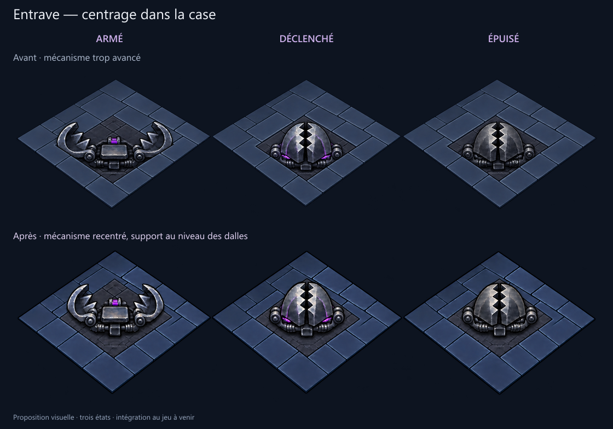
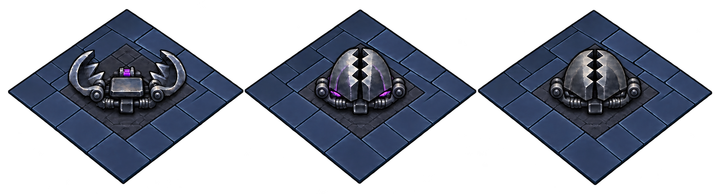

La base revient au centre du dallage dans les trois états, avec un support affleurant. Pointes et Néant sont inchangés.


Proposition visuelle non intégrée au jeu. Le déclenchement reste une proposition d’état transitoire.
Source originale · Prompt ImageGen · Contrôles